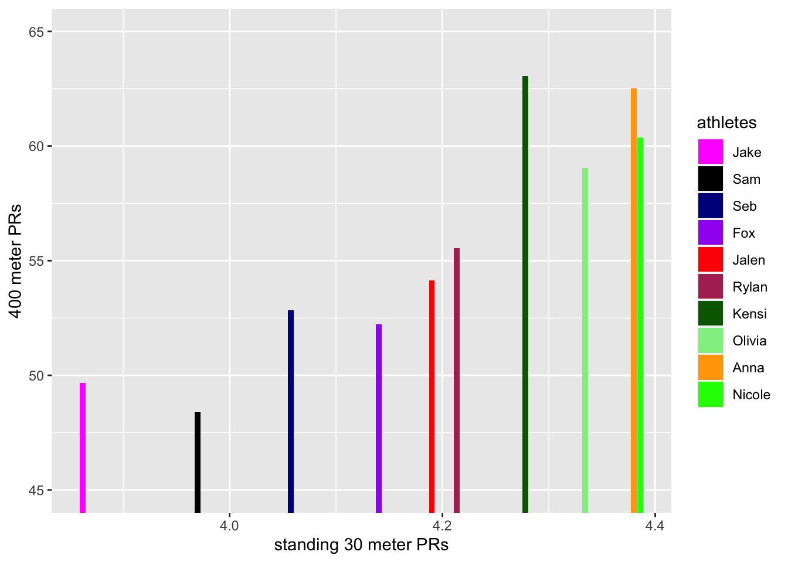
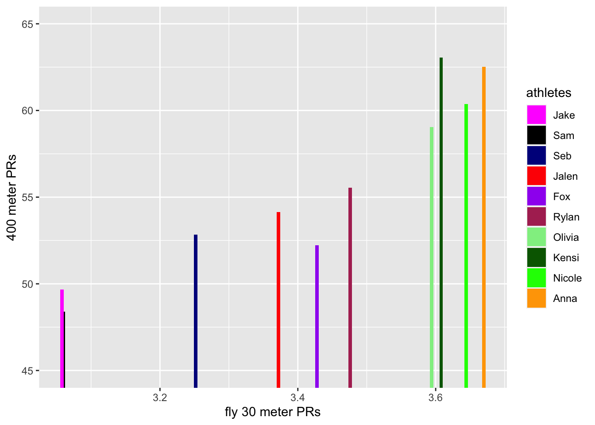

# first find average of five fastest times in each 30m category
thirties <- four_hund_data[, grep("30", names(four_hund_data))]
# replace "NA" with 0 so that we can order the columns
thirties[is.na(thirties)] <- 0
ordered_thirties <- as.data.frame(apply(thirties, 2, sort))
# finding the 5 lowest values
find_five_lowest_non_zero <- function(column_data) {
non_zero_values <- column_data[column_data != 0]
sorted_values <- sort(non_zero_values)
five_lowest_values <- head(sorted_values, 5)
return(five_lowest_values)
}
fastest_five <- apply(ordered_thirties, 2, find_five_lowest_non_zero)
# in order to find the average of the fastest five, we need all vectors to actually be five values
# finding the max_length
max_length <- max(sapply(fastest_five, length))
# pad vectors with NAs to make them equal length
padded_list <- lapply(fastest_five, function(x) {
length(x) <- max_length
return(x)
})
# convert padded list to dataframe
fastest_five_df <- data.frame(padded_list)
# now we can calculate the averages
top_five_avgs <- colMeans(fastest_five_df, na.rm = TRUE)
top_five_avgs_df <- data.frame(top_five_avgs)400 Data
the data
the data comes from the Pomona-Pitzer track team which is a Division 3 collegiate program. much of it is times collected through a laser timing system used on days when the team is doing short-sprinting work. An interest of this analysis is to see how the success of 400 meter athletes in the short-sprinting work compares to their abilities in the actual 400 meter races. This is of interest because the 400 is a long enough event that it requires both aerobic and anaerobic strengths, the balance of which can vary from athlete to athlete. the data is too small to make any legitimate conclusions, but will be cool to explore nonetheless!
standing 30’s vs. fly 30’s
how do both standing and flying 30 meter times correspond to 400 performance?
now we can get our 400 performances
four_hundreds <- four_hund_data[, grep("400", names(four_hund_data))]
# get the fastest performances
min_values <- apply(four_hundreds, 2, min, na.rm = TRUE)
fastest_four_hundreds <- data.frame(min_values)# want to make a dataframe that allows us to compare 30s and 400s
stand_thirties <- top_five_avgs_df[seq(1, nrow(top_five_avgs_df), by = 2), ]
fly_thirties <- top_five_avgs_df[seq(2, nrow(top_five_avgs_df), by = 2), ]
fastest_stand_thirties <- data.frame(stand_thirties)
fastest_fly_thirties <- data.frame(fly_thirties)
total_df <- cbind(fastest_four_hundreds, fastest_stand_thirties, fastest_fly_thirties) %>%
mutate(athletes = c("Sam", "Jake", "Fox", "Jalen", "Rylan", "Seb", "Olivia", "Nicole", "Kensi", "Anna"))total_df %>%
ggplot() +
geom_col(aes(x = stand_thirties, y = min_values, fill = athletes)) +
scale_fill_manual(values = c("Sam" = "black", "Jake" = "magenta", "Fox" = "purple", "Seb" = "darkblue", "Jalen" = "red", "Rylan" = "maroon", "Olivia" = "lightgreen", "Nicole" = "green", "Kensi" = "darkgreen", "Anna" = "orange"),
breaks = c("Jake", "Sam", "Seb", "Fox", "Jalen", "Rylan", "Kensi", "Olivia", "Anna", "Nicole")) +
xlab("standing 30 meter PRs") +
ylab("400 meter PRs") +
coord_cartesian(ylim = c(45, 65))
athletes with lower bars relative to those clustered around them, (Sam, Fox, & Olivia), are more “strength based” athletes. they have better 400 meter PRs with the same acceleration as those around them. so it is likely that their strength comes from somewhere else.
now we might want to see how fly 30 Meter times compare to 400 meter PRs. since the fly times tell us more about max velocity than they do about acceleration, they might be more informative.
total_df %>%
ggplot() +
geom_col(aes(x = fly_thirties, y = min_values, fill = athletes), width = 0.005) +
scale_fill_manual(values = c("Sam" = "black", "Jake" = "magenta", "Fox" = "purple", "Seb" = "darkblue", "Jalen" = "red", "Rylan" = "maroon", "Olivia" = "lightgreen", "Nicole" = "green", "Kensi" = "darkgreen", "Anna" = "orange"),
breaks = c("Jake", "Sam", "Seb", "Jalen", "Fox", "Rylan", "Olivia", "Kensi", "Nicole", "Anna")) +
xlab("fly 30 meter PRs") +
ylab("400 meter PRs") +
coord_cartesian(ylim = c(45, 65)) 
Sam and Olivia’s fly 30 meter PRs move them closer to the fast end of their respective groups which tells us that max velocity might correspond more directly with their 400 meter ability. Fox however is still in a similar spot relative to the others, which makes sense because he is historically an 800/1500 meter runner so his strengths are truly more aerobic.